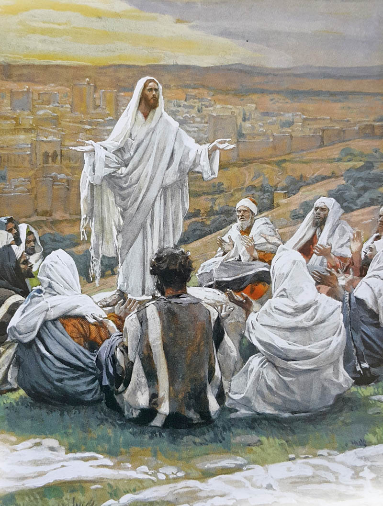
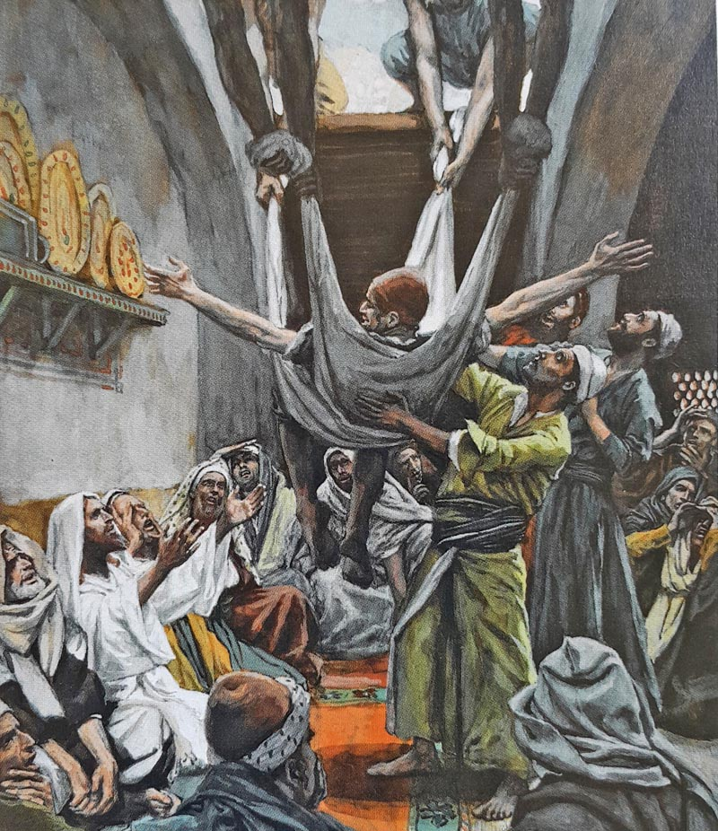

Sukkot. Jewish Feasts in the Gospels
An interesting subject: "Jewish Feasts in the Gospels". The Bible scholar Ilya Grits talks about a situation in the Gospel that does not name the feast directly but gives certain hints of it.

Ilya Grits, a very good older friend of mine from Jerusalem, a Bible scholar of enormous experience, a Jewish sage and a wonderful storyteller, God give him health, touches here on a very interesting subject, "Jewish Feasts in the Gospels". He examines the well-known episode of "the healing of the man sick of the palsy", who was let down through the opened roof into the house where Yeshua was. This situation in the Gospel does not name the feast directly, but gives certain hints that everything happening in the house is part of a Jewish feast. If we take this into account, our understanding of the situation may be different. It is like painting: depending on the focus of attention, our impression of the picture changes.
Here you can watch Ilya Grits's talk, given by Skype from Jerusalem.

Read the second part of this talk here.
 The Jewish Attitude to the Feasts of the LORD
The Jewish Attitude to the Feasts of the LORD Yom Kippur prayer. New music interpretation
Yom Kippur prayer. New music interpretation Blessings on the Chanukah Menorah
Blessings on the Chanukah Menorah